歌唱比賽模擬遊戲
遊戲架構
開始畫面 – 遊戲 – 過關
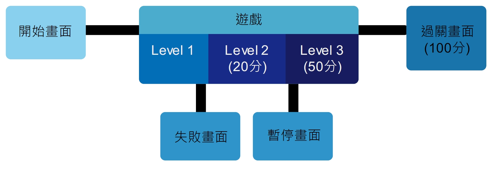
- Level 1
設置柱子障礙物，玩家必須避開柱子收集音符，關卡目的為讓玩家熟悉操作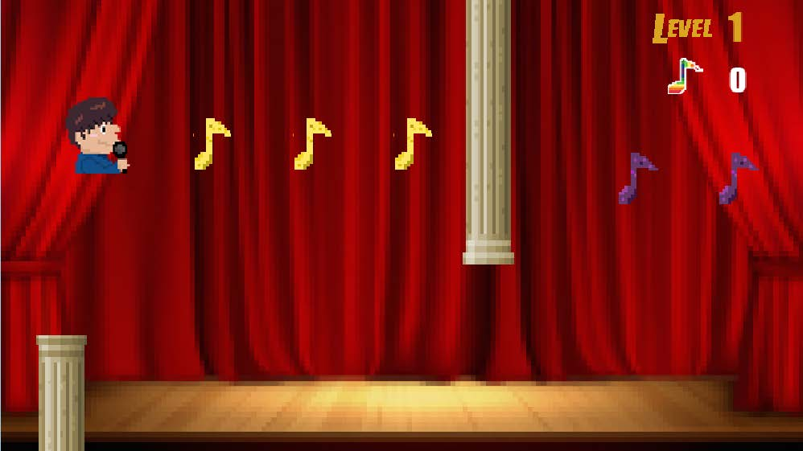 - Level
收集到20 個音符後進入 Level 2 ，開始出現怪物阻擋玩家，因此玩家需要發射子彈來消滅怪物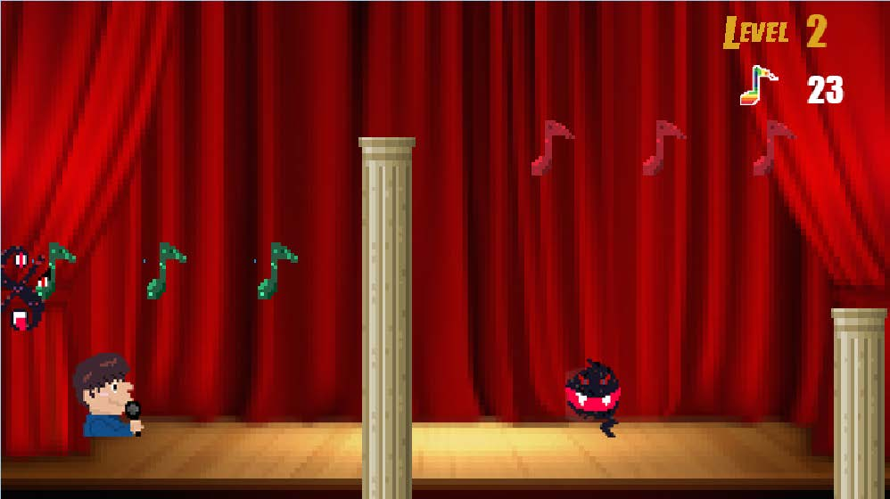
固定不動的怪物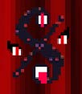會移動擋住玩家去路的怪物 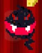 - Level 3
收集到50 個音符後進入 Level 3 ，增加了會攻擊的怪物，必須更加小心。收集到 100 個音符後過關。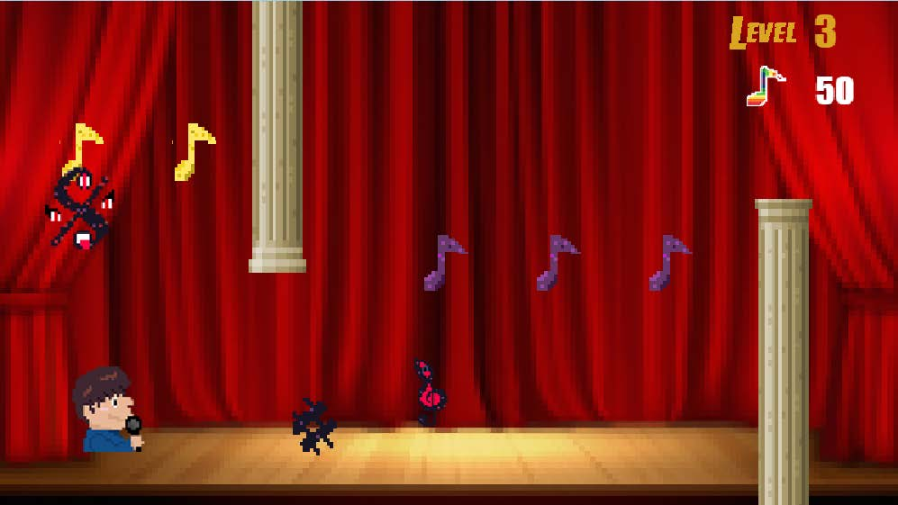
會發射頭上符號的怪物 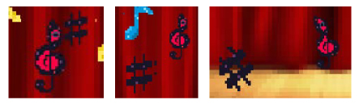
之中如果消滅怪物，有50% 的機率出現大音符，可以得到比較多的音符數量，增加玩家消滅怪物的動機，以及平衡遊戲的難易度。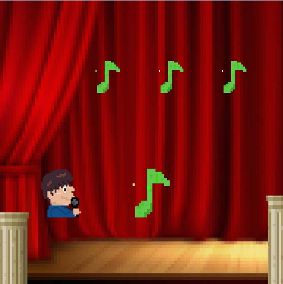
遊戲美術
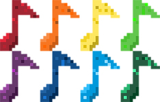
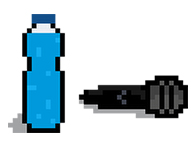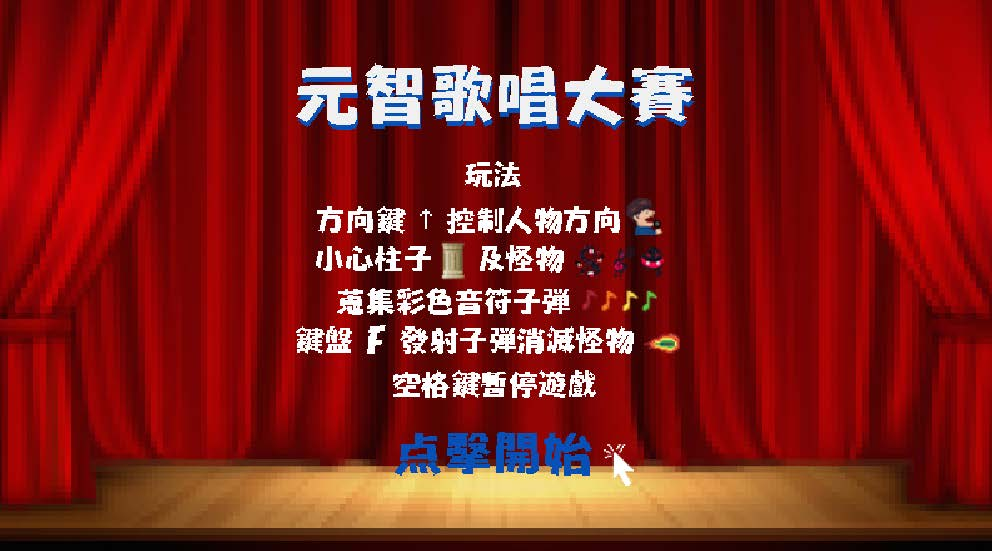
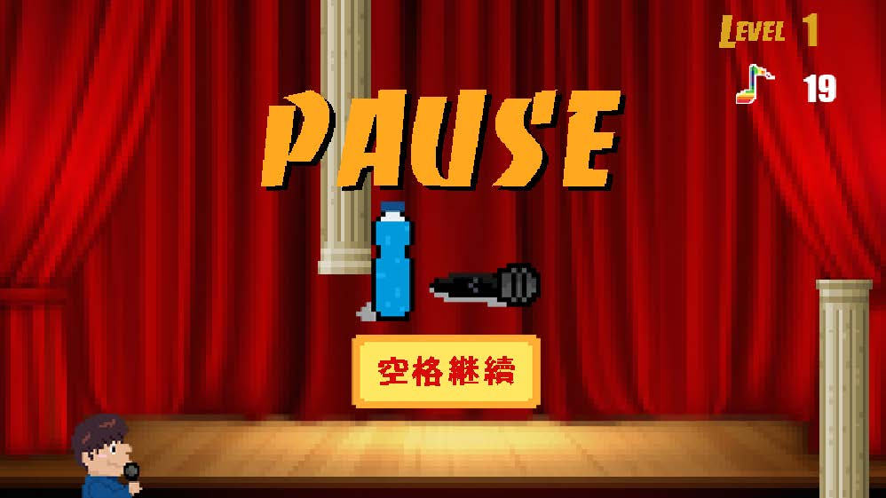
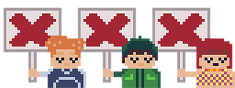
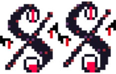
 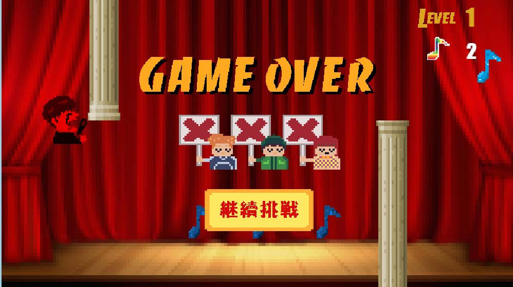
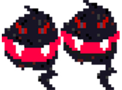
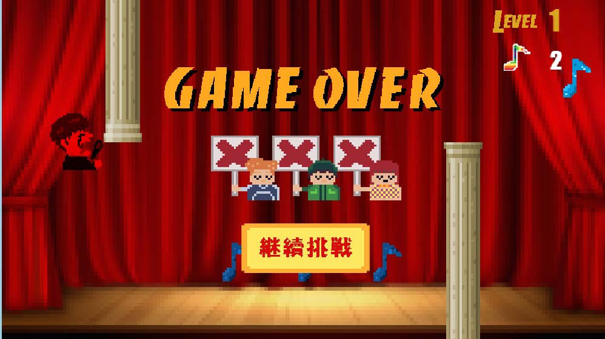
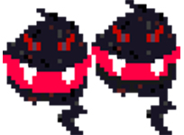
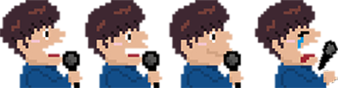
大部分音效使用的是 SoundJay 免費的音效軟體，開始畫面以及遊戲畫面的音樂是使用garageband 軟體進行的製作
時程規劃
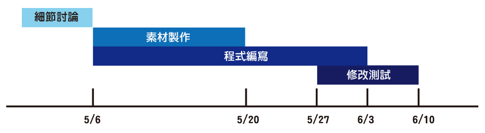
小組分工
1061829 李孟珊：遊戲程式、美術素材製作
1062004 應淯文：遊戲程式、遊戲流程編排
1062024 陳晁傑：遊戲程式、測試與整合
1062004 應淯文：遊戲程式、遊戲流程編排
1062024 陳晁傑：遊戲程式、測試與整合